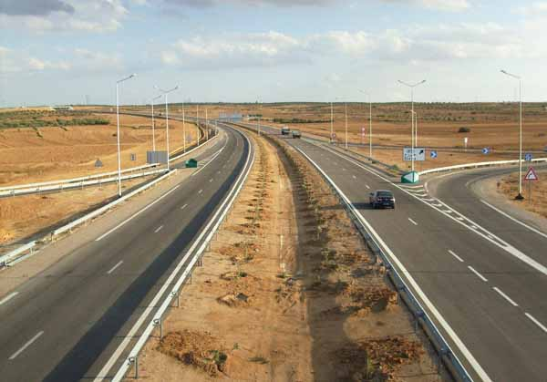
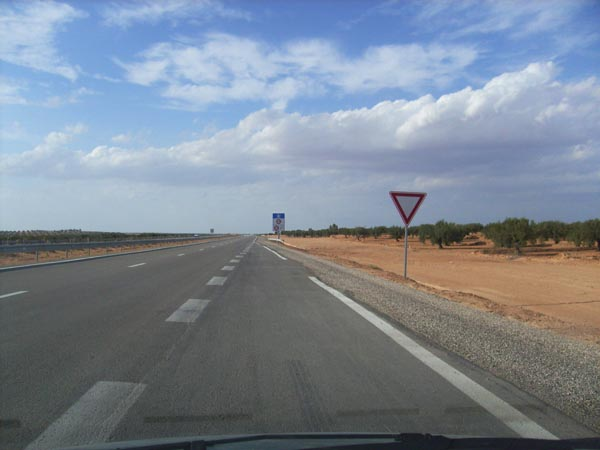
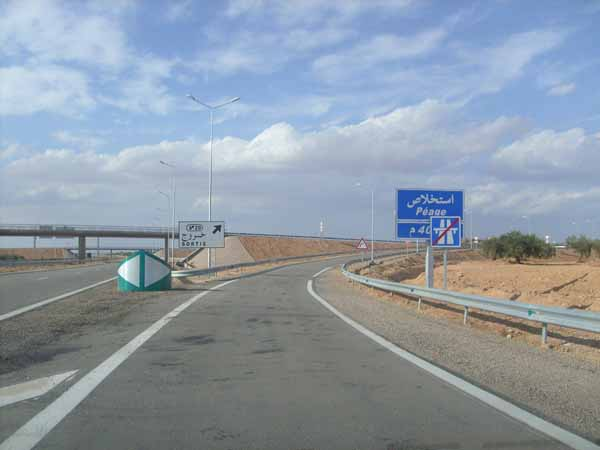
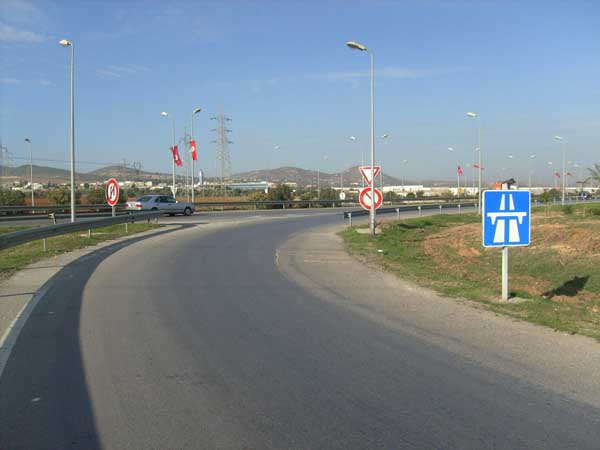
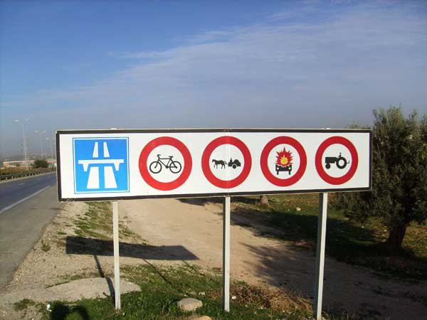

توفر الطريق السيارة أفضل شروط السلامة لمستعملي الطريق لأنها لاتتقاطع مع طريق أخرى أو مع خط للسكك الحديدية ولا يعبرها ممرات للمترجلين .

و تشتمل بالنسبة لاتجاهي الجولان على معبدين منفصلين عن بعضهما بأرض مسطحة .
الدخول الى الطريق السيارة
يجب على السائق الذي يتهيأ للدخول إلى الطريق السيارة - عبر محولات الدخول - أن يزيد في سرعته وذلك عندما يتأكد بواسطة المرآة العاكسة للرؤيا من الجهة اليسرى بأن لديه الوقت الكافي للاندماج بين العربات وذلك حسب سرعتها والمسافة التي تفصلها



الخروج من الطريق السيارة
عند الخروج من الطريق السيارة يجب الانحياز إلى السبيل الأيمن مع التخفيض تدريجيا في السرعة كلما اقتربت من العلامات العمودية.
يحجر الجولان بالطرقات السيارة على :
•المترجلين
•الدراجات والدراجات النارية الصغيرة
•العربات غير المجرورة آليا
•الجرارات والمعدات الفلاحية ومعدات الأشغال العمومية
•السيارات أو مجموع العربات التي لا تستطيع بلوغ سرعة دنيا ب 60 كم في الساعة
•العربات ذات المحرك غير الخاضعة للتسجيل
•العربات المخصصة للنقل الاستثنائي

يحجر على السواق القيام بالعمليات التالية على الطرقات السيارة
•السير إلى الوراء
•الرجوع على الأعقاب لاسيما بعبور الأرض المسطحة الفاصلة بين المعبدين أو استعمال نقاط العبور بها
•الجولان على جوانب الوقوف الاضطراري.
التوقف الاضطراري
وفي صورة التوقف الاضطراري للعربة (تعطب العربة بالطريق، حادث، خطر داهم... ) يجب على السائق أن يبذل كل ما في وسعه لإخراج العربة من المعبد ومن جانب الوقوف الاضطراري، وإن تعذر عليه ذلك يعلن عن وجودها بالإشارات القانونية حتى يتمكن بقية السواق من رؤية العربة على مسافة كافية.
يجب على السائق في هذه الحالة الإشارة للعربة بواسطة مثلث الخطر : يوضع هذا المثلث خلف العربة على مسافة 100 متر بهذه الطريق.
يمكن بالإضافة إلى ذلك استعمال وسائل إشارة أخرى خاصة بتشغيل أضواء تغيير الاتجاه مع بعضها أو وضع ضوء يدوي رفاف ذي لون أصفر.